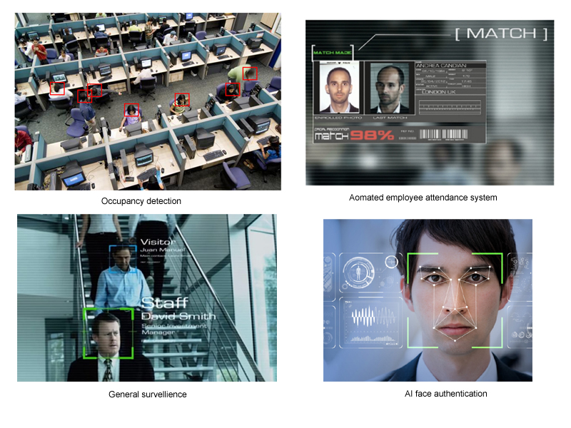

We provide A.I based solutions that can detect and recognize humans and their relationships in real-time. This data can be synced into cloud based storage systems. The data can then be visualized into dashboards to perform analytics to see trends and obtain insights or even automate tasks. Most of all, your interface is completely customizable
Vehicle identification, tracking and demographics
Applications: Vehicle Search: Find licence plate number in all cameras in the network
Community security system simultaneously recognizes community sticker, number plate and tie it with human. This is ideal for offices and gated communities. A variety of real time inferences can be programmed as illustrated in figure(2)
People counting & grouping
Feature extraction & Classification
Restaurant analytics: visitor demographics, waiting time, occupancy, top dishes etc..
Fight detection
Facial recognition
Face search using local database, secure authentication using facial recognition, Face search in local camera network, automatic attendance system based on facial recognition for organizations, sleep detection for schools and colleges, and general surveillance
